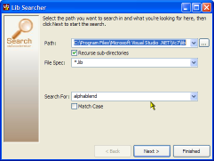
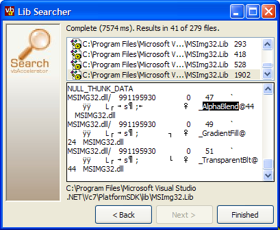

VB6 Async File Find Component (10K)
VB6 Async File Find Component (10K)
 VB6 LibSearch Demonstration (89K)
VB6 LibSearch Demonstration (89K)
 14 Jan 2003
14 Jan 2003
First Posted
 Subclassing Without The Crashes
Subclassing Without The Crashes
 IShellFolder Extended Type Library Version 1.2 (ISHF_Ex.Tlb)
IShellFolder Extended Type Library Version 1.2 (ISHF_Ex.Tlb)
 IShellFolder Extended Type Library Version 1.2 (ISHF_Ex.Tlb)
IShellFolder Extended Type Library Version 1.2 (ISHF_Ex.Tlb)

Finding Which DLL Contains an API Call
Use the Platform SDK files to help create new API declares using Visual Basic
The API Text Viewer provided with VB is a reasonable source of Win32 API call declares. However, the Win32 API is continually expanding, and there aren't many (if any) updates to the database of calls. Whilst MSDN Online provides you with most of the documentation you need to implement a new call, there's normally one thing missing: which DLL will you find the call in? For example, it isn't clear that the AlphaBlend function in the GDI section is actually implemented in MSIMG32.DLL. This article describes how to find which DLL you need using the Platform SDK and provides a search toy for doing it.
Platform SDK Include Files
If you download the platform SDK, you'll find you get a few things to play with. The Include directory contains the C/C++ header files and IDL/ODL files for the API itself, and the Lib directory contains the C/C++ libraries to link to when using the them. Between these and the MSDN libraries you get everything you need to create new API DLL calls in VB.
Working Out What To Write in VB
For the purposes of this sample, I'll use AlphaBlend as an example. If you go to MSDN and look in the GDI documentation you'll see the declaration of the AlphaBlend function, and the associated BLENDFUNCTION structure which is needed. BLENDFUNCTION itself needs a constant value, AC_SRC_ALPHA for its use.
You will find most of the details you need to implement AlphaBlend, BLENDFUNCTION and AC_SRC_ALPHA in the Include directory within WinGDI.h (although it has to be said that the parameters to the AlphaBlend function could be done nicer):
typedef struct _BLENDFUNCTION
{
BYTE BlendOp;
BYTE BlendFlags;
BYTE SourceConstantAlpha;
BYTE AlphaFormat;
}BLENDFUNCTION,*PBLENDFUNCTION;
//
// currentlly [sic] defined blend function
//
#define AC_SRC_OVER 0x00
//
// alpha format flags
//
#define AC_SRC_ALPHA 0x01
WINGDIAPI BOOL WINAPI AlphaBlend(
IN HDC,
IN int,
IN int,
IN int,
IN int,
IN HDC,
IN int,
IN int,
IN int,
IN int,
IN BLENDFUNCTION);
Finding it is easy, you can either just search the Include directory for all files which contain the text "AlphaBlend", or note that the MSDN documentation tells you the declare is to be found in WinGdi.h and have a look for it there.
If you're searching for something you may find the search toy comes in handy here: although the search for text function in Windows XP is very fast this appears to come with the unfortunate side effect that it also returns no results. I could actually write an even faster version which achieves the same thing which would take literally no time at all, so perhaps its not as fast as it seems. Anyway, until it gets fixed I can only regard it as hopelessly broken.
For the purposes of this article it is assumed that you know how to convert the declares from C to VB; if not, Google will almost certainly provide you with lots of articles from VB sites, one or two of which might even provide some sort of useful text. Otherwise, there are some good books on the subject, particularly from Daniel Appleman, and you can always compare the declare to something else similar and try messing around until it works.
Finding Which DLL
To find the correct DLL, you need to have a look at the Lib directory. Although the Lib directory contains binary files, these files have enough plain text within them to find which DLL. To locate AlphaBlend, search all the .lib files for the text (again, XP's text search is brain dead so you'll need to use the sample here or another search toy to find it). If you use an appropriate search function you should find you get a match on two files: a DirectX version and the standard GDI version. Here's the result from the Search tool:
Wrap Up
That demonstrates how to find all the information you need to declare a new VB API call. In my frustration with the XP search function I built a new search utility which is available in the downloads. This utility demonstrates how to use an out-of-process EXE to do the search in another thread (without question the easiest way to create a multi-threaded application) as well as some other UI goodies such as simple Owner-Draw List Box and a nice directory picker which uses the Shell's autocompletion function. Finally, settings are persisted to the registry making it easy to use over for searching those header and lib files.
To set up the sample, you first need to download and register the Asynchronous Find In Files component. This is an ActiveX EXE so to register it you just need to run it with the /REGSERVER command line switch. So for example, if you've downloaded AsyncFindInFiles.exe to the folder "C:\vbAccelerator\AsyncFindInFiles.exe" then just choose Start->Run and type
"C:\vbAccelerator\AsyncFindInFiles.exe" /REGSERVER
to register it. Once that's done, you can run the search toy from LibSearch.exe in the sample. If you want to debug everything to see what's going on, its possible to set up two instances of VB, one running the ActiveX EXE and the other running the LibSearch project.